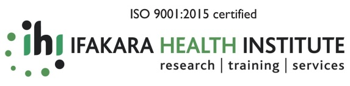
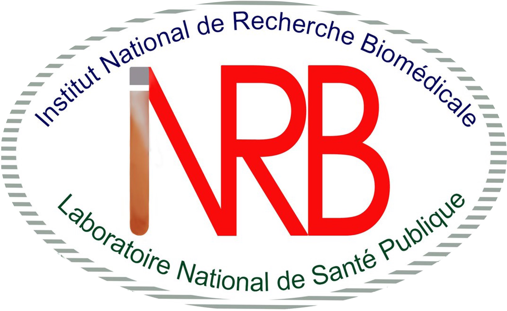
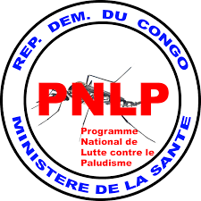
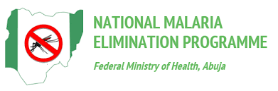

The network
Three hubs, one architecture
Each hub builds local modelling capacity while sharing methods, data and lessons across the network. Tanzania coordinates; the DRC and Nigeria anchor the work in different ecological and epidemiological settings.

Tanzania — Ifakara Health Institute
Hosts the project as regional coordinator and main recipient of funds, leading efforts to establish the hubs and build regional capacity.
Country Lead — Yeromin Mlacha

DR Congo — INRB
Leads the DRC hub from the National Institute for Biomedical Research (INRB), in one of the highest-burden malaria settings on the continent.
Country Lead — Emery Metelo

Nigeria — Osun State University
Brings the network into West Africa's distinct transmission and health-system context.
Country Lead — Adedapo Adeogun
Collaborators
Partners across the network
The hubs work hand in hand with National Malaria Programmes — the PNLP in the DRC and the National Malaria Elimination Programme in Nigeria — alongside research and technical partners including the University of Oxford, PATH and the Kids Research Institute Australia. A regional Community of Practice in vector epidemiology and modelling connects modellers, researchers and decision-makers as the network grows.



